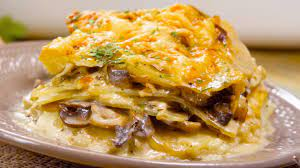

Pure de Papas
El puré de papa es perfecto para usar como guarnición, esta versión lleva un toque de queso parmesano que le da un sabor muy rico, pero puedes usar también queso manchego. También puedes añadirle jamón de pechuga de pavo o jamón ibérico para darle un toque más gourmet.

Ingredientes
- 2 litros de agua
- 4 papas cortadas en cubos
- Una taza de leche de vaca
- 2 cucharadas de mantequilla
- Una cucharada de sal
- Una cucharada de pimienta blanca
- Una cucharada de nuez moscada
- 1 taza de queso parmesano
- Dos tazas de jamon, cortado en cubos pequeños
- 2 cucharadas de perejil fresco, cortado finamente
Preparacion
- Para el puré, calienta una ollita a fuego medio con el agua, cocina las papas con un poco de
sal hasta que estén muy suaves, cuela y reserva.
- Para el puré, calienta una ollita a fuego medio con el agua, cocina las papas con un poco de
sal hasta que estén muy suaves, cuela y reserva.
- Agrega el queso parmesano, el jamón y mezcla, sirve el puré y decora con perejil.
Papas fritas
Hacer una patata frita sublime,es muy facil. Solo hay que saber cómo y, hay que conocer una serie de pasos. Lo primero es su corte. Dependiendo de cómo cortemos la patata, quedará de una manera u otra. Lo segundo a tener en cuenta, es su forma de fritura. Hay una técnica en concreto llamada «fritura a la francesa» que no es más que cocinarla en dos fases diferentes. Vamos a verlo con mayor detalle. Vamos a hacer unas autenticas patatas fritas crujientes y doradas.

Ingredientes
- 3 papas medianas
- Sal
- Aceite de oliva
Preparacion
- Lo primero a tener en cuenta,como ya decía, es el corte. El grosor del mismo sí importa.
Y mucho. Pelamos la patata y la cortamos en forma de bastoncitos. El tamaño del mismo debe
ser de alrededor de 1 centímetro de grosor. Esté es el tamaño estandar y más común en una
patata frita. Con él, nos aseguramos que tenga una carcasa crujiente y un interior blandito y
sabroso.
- El siguiente paso, es lavar las patatas. Con ello, eliminaremos el exceso almidón que
contienen y conseguiremos que, no se peguen entre sí y que nos queden más crujientes.
Así que las colocamos sobre una escurridera y las lavamos con abundante agua.
- Les escurrimos bien el exceso de agua y procedemos a freír las patatas. Y lo vamos a hacer
en dos fases muy diferenciadas entre sí. En la primera,ponemos en una sartén o freidora
abundante aceite de oliva a fuego medio; el suficiente como para que cubra por completo las
patatas, y las metemos dentro. Dejamos que vayan cocinándose cerca de 10 minutos,dependiendo
de la dureza de la patata. Cuando esté blanda, la retiramos del aceite y las dejamos mínimo
30 minutos para que se enfríen. Este tiempo de reposo, es crucial así que, si tienes tiempo,
no te lo saltes.
- Pasado este tiempo, calentamos el aceite al máximo y metemos en él las patatas. Cuando
estén doradas y a nuestro gusto, las sacamos. Alrededor de dos minutos. Las ponemos sobre
papel absorbente y les echamos la sal.
Pastel de papa con champiñones y espinaca
Una receta pensada para vegetarianos, similar a una lasaña que mezcla una capa de puré de patata con un sofrito de cebolla, champiñones, espinacas y salsa bechamel casera y queso curado rallado. Un plato perfecto para comer en cualquier ocasión. Para elaborar el pastel de papa con champiñones y espinacas sólamente necesitas los ingredientes que te muestro a continuación:
Ingredientes
Pastel de papa
- 1 cebolla
- 2 dientes de ajo
- 200g de campiñones
- 200g de espinacas
- 50g de queso rayado
- Sal y pimienta
- Aceite
bechamel
- 20ml de aceite
- 20g de harina
- 200ml de leche
- Nuez moscada
- Sal y pimienta
pure de papa
- 2 papas
- 200ml de leche
- 50g de mantequilla
- Nuez moscada
- Sal y pimienta
Preparacion
- En una cazuela con abundante agua ponemos unas patatas cortadas en cubos. Llevamos esta agua a
ebullición y dejamos que las patatas se cocinen durante unos 25 minutos.
- Mientras tanto, en una sartén ponemos un chorrito de aceite y lo calentamos a fuego medio.
Cuando esté caliente, añadimos los dientes de ajo picados y la cebolla cortada en finas tiras.
Salpimentamos. Removemos todos los ingredientes mientras dejamos que se cocinen, a fuego medio,
durante unos 15 minutos.
- Pasado este tiempo, añadimos unos champiñones limpios y previamente cortados en láminas.
Subimos la potencia del fuego y removemos para integrar los champiñones con la cebolla y el ajo.
Cocinamos todo durante unos 2 minutos. A continuación, añadimos las espinacas y las integramos
junto con el resto de ingredientes manteniendo el fuego fuerte durante 1 minuto. Hecho esto,
apagamos el fuego y dejamos reposar.
- Es el turno de preparar la bechamel para nuestro pastel de patata con champiñones y espinacas.
Para ello en una cazuela ponemos un chorrito de aceite y lo calentamos a fuego medio. Agregamos
dos cucharadas de harina y removemos bien para que se integren ambos ingredientes. Pasados unos 2
minutos, cuando la harina se haya tostado y haya perdido su sabor a crudo, añadimos unos 100ml de
leche caliente y volvemos a mezclar hasta que se integre. Hecho esto, añadimos el resto de la leche
y volvemos a mezclar. Cuando esté lista, salpimentamos y añadimos 1/2 cucharadita de nuez moscada.
Removemos brevemente y añadimos la bechamel al sofrito de champiñones y espinacas. Lo integramos
bien con estos ingredientes.
- Cuando las patatas se hayan cocido, apagamos el fuego. Añadimos unos tacos de mantequilla y
la leche. Con ello, vamos a hacer un puré que será la base de nuestro pastel de patata con
champiñones y espinacas. Removemos para integrar estos ingredientes y comenzamos a triturar
esta mezcla. Cuando no queden grumos, añadimos 1/2 cucharadita de nuez moscada y salpimentamos.
Mezclamos brevemente para integrar estos ingredientes.
- Cuando las patatas se hayan cocido, apagamos el fuego. Añadimos unos tacos de mantequilla y
la leche. Con ello, vamos a hacer un puré que será la base de nuestro pastel de patata con
champiñones y espinacas. Removemos para integrar estos ingredientes y comenzamos a triturar
esta mezcla. Cuando no queden grumos, añadimos 1/2 cucharadita de nuez moscada y salpimentamos.
Mezclamos brevemente para integrar estos ingredientes.
- Hecho esto, en un molde para horno, ponemos un hilito de aceite y, con un pincel, pintamos
todo el interior del molde. A continuación, añadimos unas cucharadas del puré de patata y lo
esparcimos bien por toda su superficie, lo aplastamos un poco y lo compactamos. Sobre ello,
añadimos el sofrito de cebolla, champiñones, espinacas y salsa bechamel. Lo distribuimos por
toda la superficie de la patata. Para finalizar, ponemos queso rallado por encima, que cubra
bien la parte superior del pastel.
- Introducimos nuestro pastel de patata con champiñones y espinacas en el horno previamente
calentado a 180ºC, calor arriba y abajo y dejamos que el queso se gratine durante unos 10
minutos aproximadamente. Pasado este tiempo, retiramos la bandeja del horno, dejamos reposar
unos 10 minutos más y servimos.